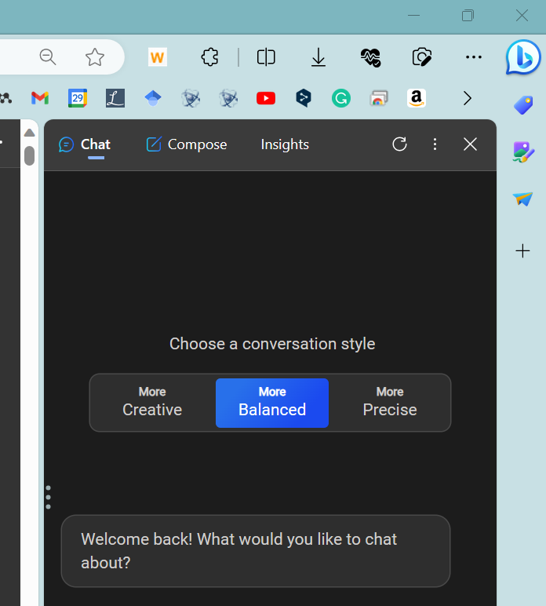

2023-08-21
2023-09-02
AIの進化は、少なくとも私の生活に革命を起こしている。ChatGPT 3.0が2022年12月にリリースされてから半年が過ぎ、GPT-4、遂には大企業向けChatGPTエンタープライズも登場した。このブログでは、研究者である私がどのようにChatGPTを使っているかを紹介したいと思う。サービス開始の初期からの課金ユーザーであり、ブラウザのウインドウには常にGPTが待機している状態である。私の用途としては、主にプログラミングと論文要約である。特に、プログラミングにはChatGPTのプラグイン機能を、論文要約にはブラウザのbing-Chatを利用している。特に、私がどんな作業にGPTを利用しているのか、具体的にどんなプロンプトを入力しているのかなど、私のGPTの活用方法をここに記しておきたいと思う。基本的に私のブログは私のための議事録のようなものなので、読んでいて不親切で不便で不快な場面もあるかもしれないが、ご了承していただきたい。
目次
2. GPTの活用とその限界
大学での研究や教育にGPTを導入してから、作業効率は大幅に向上した。特に査読のフィードバック、メールの作成、論文の要約などでその効果を感じている。ただし、ブログ記事やオリジナルの論文を書く際には、GPTが過去のデータに依存する特性上、新しいアイデアや独創性が求められる場合には逆効果になることもある。そのような場合、手作業で調整する必要が出てくる。具体的には、メール作成でよくChatGPT-4を使う。自然な文章が生成されるため、相手に良い印象を与える。一方、引用やデータを基にした議論が必要な場合にはBingChatを活用している。これはWeb上の信頼性の高い情報に基づくため、その内容が確かだ。
それでも、どちらのAIも専門用語やマイナーな話題に完全に対応できないケースもある。そういった状況では、自分でリサーチを行うか、他のツールを使って問題を解決している。要するに、GPTは便利だが万能ではない。それでも、日常業務を効率化するには非常に有用なツールと言える。
それでも、どちらのAIも専門用語やマイナーな話題に完全に対応できないケースもある。そういった状況では、自分でリサーチを行うか、他のツールを使って問題を解決している。要するに、GPTは便利だが万能ではない。それでも、日常業務を効率化するには非常に有用なツールと言える。
3. GPT-4の課金価値
研究室の構成を見ても、未課金の学生がほとんどであり、一方で、20人中、課金しているのは一人の院生だけ。これは学生の多くがGPTの有用性をまだ理解していないからだと思う。月20ドル、それは飲み会一回分の出費と比べれば、実はさほど高くない。特に課金の対価として提供される機能を考えれば、これは安いとさえ言える。未課金だとデフォルトのGPT-3.5、課金するとGPT-4とプラグイン機能が使える。ただ、それだけではない。最近名称を変更した「Advanced Code Analysis」（旧：Code Interpreter）という機能は群を抜いて超有用である。Advanced Code Analysisでは、ExcelやCSVファイルをそのままGPTに読ま込ませ、質問に対する回答だけでなく、人間言語で指示一つで数値解析からグラフ作成、さらには機械学習まで実行してくれるのである。具体的には、「このデータに対してk-meansクラスタリングを行ってください」と一言、クラスタ数や距離尺度などのパラメータを自動で決めてくれて、グラフの可視化まで全てAIが全部やってくれる。このように、GPT-4はコーディングに関する知識やスキルがなくても、データ分析や機械学習を行うことができる画期的なツールだといえる。
無料バージョンのGPT3.5では質問に対する回答コードを提示してくれるだけだが、多くの場合はエラーが出てしまう。それを指摘しても、またエラーを受け取るという負のループにはまってしまったことは多くの人が経験したことだと思う。ここで上で示したAdvanced Code Analysisだと、まず生データのファイルを添付するボタンがあり、それを入力するとなんの説明をなくとも、データ構造を理解してくれる。このリアルな生データに対して、解析、可視化、機械学習モデル作成、相関分析等、一通りやりたいと思っていることを、ChatGPT上で実際に計算してテストしてくれる。この過程で、最適なコードを提案してくれるだけでなく、エラー自体も確認して、また修正して可視化までしてくれるのである。
このようにGPT-4は、特にコードに関連した作業を行う際に、GPT-3.5よりもはるかに高度で総合的なアシスタントとなる。実際に、研究者や技術屋さん、プログラマーとして働く人々にとって、GPT-4はもはや欠かせない「もう一つの頭」になっているはずである。GPT-3.5からのこの短期間の進化を考えると画期的であり、未課金でいる理由が見当たらない。それでは、飲み会一回分の出費で手に入る「もう一つの頭」、どうですか？手にしてみては。
無料バージョンのGPT3.5では質問に対する回答コードを提示してくれるだけだが、多くの場合はエラーが出てしまう。それを指摘しても、またエラーを受け取るという負のループにはまってしまったことは多くの人が経験したことだと思う。ここで上で示したAdvanced Code Analysisだと、まず生データのファイルを添付するボタンがあり、それを入力するとなんの説明をなくとも、データ構造を理解してくれる。このリアルな生データに対して、解析、可視化、機械学習モデル作成、相関分析等、一通りやりたいと思っていることを、ChatGPT上で実際に計算してテストしてくれる。この過程で、最適なコードを提案してくれるだけでなく、エラー自体も確認して、また修正して可視化までしてくれるのである。
このようにGPT-4は、特にコードに関連した作業を行う際に、GPT-3.5よりもはるかに高度で総合的なアシスタントとなる。実際に、研究者や技術屋さん、プログラマーとして働く人々にとって、GPT-4はもはや欠かせない「もう一つの頭」になっているはずである。GPT-3.5からのこの短期間の進化を考えると画期的であり、未課金でいる理由が見当たらない。それでは、飲み会一回分の出費で手に入る「もう一つの頭」、どうですか？手にしてみては。
4. GPTとの共同作業
プログラミングにおいても、GPTの力を借りることで新たな地平が広がる。具体的には、HTMLによるホームページ作成、PythonやC++を用いた数値シミュレーション、Linuxのシステム環境構築などを目的に日々GPTと向き合っている。このブログ自体もGithub Pagesを使って立ち上げたが、今では完全に独自のものと化している。静的なページ作成の限界をGPTのお陰で破ったといっても過言ではない。一か月ほど触り続けた結果、自分自身でも驚くほどに成長した。
数学的な計算やアルゴリズムについても、GPTは頼りになる相棒だ。物性物理や材料工学などの分野で数式やモデルをGPTに投げつければ、見事に数値やグラフを吐き出してくれる。また、逆に数値やグラフから数式やモデルを推定することもできる。これにより、コーディングの学習やデバッグが効率的になります。このあたりのモデル構築などは、指示する側のドメイン知識が必要になるが、今後ある程度はこのあたりもテンプレート化していくことが予想される。
プログラミングのコードについてもGPTは見事に解釈してくれる。PythonやRのコードを解析したり、新たに生成したり。まさにコーディングのプロフェッショナルトレーナーのような存在だ。例として、Pythonでガウス分布を用いてナノ粒子の分布モデルを生成した経験がある。これは本当に教科書を開く暇もなく、GPTと一緒に手を動かして実現した。また、Linux環境の整備についても、GPTと何度も質問攻めにして、DFT計算などの商用ソフトウェア環境を整えた。これはもう、GPTがいなければ手が出せなかったレベルの難易度だ。特にプロンプトを用いる必要はなく、細かい疑問点をその都度解決している。
このように、GPTを通じて多くのスキルを身に着け、研究や開発の質を飛躍的に向上させた。最初はただの実験マンだった自分が、今や計算も機械学習も手がけるマルチな研究者に成長した。これほどまでに技術の進化が楽しいと感じたのは、GPTがあったからこそだ。
数学的な計算やアルゴリズムについても、GPTは頼りになる相棒だ。物性物理や材料工学などの分野で数式やモデルをGPTに投げつければ、見事に数値やグラフを吐き出してくれる。また、逆に数値やグラフから数式やモデルを推定することもできる。これにより、コーディングの学習やデバッグが効率的になります。このあたりのモデル構築などは、指示する側のドメイン知識が必要になるが、今後ある程度はこのあたりもテンプレート化していくことが予想される。
プログラミングのコードについてもGPTは見事に解釈してくれる。PythonやRのコードを解析したり、新たに生成したり。まさにコーディングのプロフェッショナルトレーナーのような存在だ。例として、Pythonでガウス分布を用いてナノ粒子の分布モデルを生成した経験がある。これは本当に教科書を開く暇もなく、GPTと一緒に手を動かして実現した。また、Linux環境の整備についても、GPTと何度も質問攻めにして、DFT計算などの商用ソフトウェア環境を整えた。これはもう、GPTがいなければ手が出せなかったレベルの難易度だ。特にプロンプトを用いる必要はなく、細かい疑問点をその都度解決している。
このように、GPTを通じて多くのスキルを身に着け、研究や開発の質を飛躍的に向上させた。最初はただの実験マンだった自分が、今や計算も機械学習も手がけるマルチな研究者に成長した。これほどまでに技術の進化が楽しいと感じたのは、GPTがあったからこそだ。
5. 論文要約と論文整理の仕方
論文を読むとき、私がよく使うのはbing-chatである。下の画像に示す右上の青色のbのボタンを押すとbing-chatが起動する。このMicrosoft のbing-chatはブラウザに埋め込まれており、ウェブ情報のリアルタイム取得が可能であるからである。この生成AIはPDF読み込みやウェブページにもデフォルトで対応していて、論文要約や背景調査によく利用する。論文読みの一番の課題は、その研究の手法や成果を一時的にその論文に記載していることのみの情報となってしまうことである。そこで、bing-chatを用いることで、リアルタイルのウェブ上の情報と論文内の情報を組み合わせて回答しているため、比較的中立的で批判的な論文読みを行うことができる。具体的には、論文を開いて「この論文の要点は？」と聞くと、要約から研究方法、結果、考察までざっくりと教えてくれる。また、「この論文で使われている○○って何？」と質問すると、その用語の定義や、関連するウェブサイト、論文も教えてくれる。bing-chatは一瞬でこれらを行ってくれるし、その回答の精度もGPT-4と変わらない、むしろ良いものが多い。
話をGPT-4に戻すと、最新情報をリアルタイムで取得する機能もあるけど、逐次検索方式なので時間がかかる。それに、普通のモードでは2021年秋までの情報しかないため、論文調査に向いていない点も現行のChatGPTの課題であるといえる。Bing-chatはそれを比較的一瞬で実施してくれるだけでなく、その精度もchantGPTに何ら見劣りすることなく、むしろいい回答をくれることがしばしばである。
また、ここで私の利用する定型文のプロンプトを以下に示す。

Please provide a detailed and specific explanation in English as a peer reviewer based on the context of this webpage and the results obtained from other sources through web searches: You are a science writer. Your task is to provide a title in both English and Japanese, and publication date, first author and the University, country in English.
And also, please provide five achievements/findings in Japanese. After that, please identify three specialized terms relevant to the core concept of this paper and provide a detailed explanation of each term, supported by scientific articles, reviews, and technical reports in Japanese.
Finally, please describe the detail methodology step-by-step to get the results concretely and deeply in Japanese. Note: from here, the below three information should be written in English.
And also, please provide five achievements/findings in Japanese. After that, please identify three specialized terms relevant to the core concept of this paper and provide a detailed explanation of each term, supported by scientific articles, reviews, and technical reports in Japanese.
Finally, please describe the detail methodology step-by-step to get the results concretely and deeply in Japanese. Note: from here, the below three information should be written in English.
任意の論文のPDFを開いた状態で、このテンプレートをchatに打ち込むことで、英文での論文情報、日本語での題名・成果・用語解説・方法を本当に丁寧に説明してくれる。このようにして得られた論文要約とそのまとめノートの記録は日課になってきている。従来までは論文を毎日読むにしてもしっかり読み込もうとすると1本の論文で1時間前後はかかってしまう。一方、bing-GPTの利用で、論文をそのまま分かり易く精読し、わからないキーワードや背景についても一瞬で出力してくれるので、時間だけでなく論文を読む技術も大幅に向上していく。これを一度読み込んでから図面や結果を見ると、しみ込むように論文が理解できるようになる。
以上の理由から論文要約にはbing-chatの利用をお勧めしている。Bing-chatは皆無料である！自分のPCを規定のブラウザやPDFのデフォの閲覧ソフトをMicrosoft Edgeに設定しているとこれらが連動して一瞬で、論文要旨などをまとめてくれる。一度使ってみるとこの感動は伝わると思う。最近の私の論文の読み方は、ArXivで最新未査読論文を片っ端から探して読んでいくか、Phys.orgやScicenAlert、日本の研究.comのような論文紹介サイトで探すか、グーグルスカラーのおすすめで出てきたやつを読み込み精読するようにしている。
また、プレプリントarXivやNature Springureなどの論文をchatGPTで要約して、要旨、用語解説、展望、関連研究でまとめたものを、slackに毎日送り続けるbotも作成しており、これも非常に便利である。詳細はこちらのポストを見てほしい。これにより、毎日の論文要約が自動化され、論文の理解が深まると同時に、論文の読み方も学ぶことができる。ただし、このbotは最新のものをランダムで自動選択して送ってくるものなので特定の論文読解するためには向いていない。その場合は、bing-chatを使うといいだろう。
以上の理由から論文要約にはbing-chatの利用をお勧めしている。Bing-chatは皆無料である！自分のPCを規定のブラウザやPDFのデフォの閲覧ソフトをMicrosoft Edgeに設定しているとこれらが連動して一瞬で、論文要旨などをまとめてくれる。一度使ってみるとこの感動は伝わると思う。最近の私の論文の読み方は、ArXivで最新未査読論文を片っ端から探して読んでいくか、Phys.orgやScicenAlert、日本の研究.comのような論文紹介サイトで探すか、グーグルスカラーのおすすめで出てきたやつを読み込み精読するようにしている。
また、プレプリントarXivやNature Springureなどの論文をchatGPTで要約して、要旨、用語解説、展望、関連研究でまとめたものを、slackに毎日送り続けるbotも作成しており、これも非常に便利である。詳細はこちらのポストを見てほしい。これにより、毎日の論文要約が自動化され、論文の理解が深まると同時に、論文の読み方も学ぶことができる。ただし、このbotは最新のものをランダムで自動選択して送ってくるものなので特定の論文読解するためには向いていない。その場合は、bing-chatを使うといいだろう。
6. 文書の作成・翻訳
メール作成、英文翻訳、論文執筆といった文書関連作業もChatGPTの得意分野だ。メールに関しては、要点を簡潔に箇条書きにしたメモをGPTに入力するだけで、優れた文章が出力される。メールへの回答はもっと簡単で、メールの先2通分くらいの会話を参考に載せておけば、ほぼナチュラルな文面を作成してくれる。ただし英語に関してはある程度わかっている人でないと見誤ることがあるので、注意が必要である。また、本当に大事な案件の場合は、ぼかしぼかしインプット情報として回答をチェックするようにしている。海外の友人や先生、査読関係で英語でのやり取りが多々あるが、その時の英語も自分で可能な限りの文章を作ったあとに、GPTに通して確認すると表現・文法チェックはあっという間に完了する。
論文執筆でも多角的に利用可能である。背景や社会的な文脈の構築のアイディア出しにはGPTは向いているように思える。また、要約や結論の初稿作成などで有用である。一方で、自力で書いていく必要があるのはやはり方法と実験結果と考察である。方法についてはある程度脳死で書いていくことができる。参考文献のフォーマットなどはGPTが手軽に生成してくれる。
総じて、データが少ない分野ではあまり活躍しない。また、固有名詞や数字についても文脈で学習しているだけのため、入れ替わったりするので注意が必要だ。意味まで考えられていないので、学習データの偏りで結果が大きく異なってしまう。しかし、特定のドメインに特化したLLM（Language Learning Models）が今後ますます普及してきているので、そのような局面でも使い道が広がるだろう。
論文執筆でも多角的に利用可能である。背景や社会的な文脈の構築のアイディア出しにはGPTは向いているように思える。また、要約や結論の初稿作成などで有用である。一方で、自力で書いていく必要があるのはやはり方法と実験結果と考察である。方法についてはある程度脳死で書いていくことができる。参考文献のフォーマットなどはGPTが手軽に生成してくれる。
抜群に優れている点
- 文書翻訳
- メール作成
- 論文要約
- コーディング
抜群に冴えない点
- 固有名詞の取り扱い
- 定量的議論
- 専門分野の最新情報
総じて、データが少ない分野ではあまり活躍しない。また、固有名詞や数字についても文脈で学習しているだけのため、入れ替わったりするので注意が必要だ。意味まで考えられていないので、学習データの偏りで結果が大きく異なってしまう。しかし、特定のドメインに特化したLLM（Language Learning Models）が今後ますます普及してきているので、そのような局面でも使い道が広がるだろう。
7. おわりに
以上が、私がChatGPTを使って効率化を図る方法の一部だ。文書修正、キャッチフレーズ生成、論文要約、英文翻訳、コーディングなど、多岐にわたる用途で利用している。他にも便利なツールがあれば紹介したいと思う。研究者の方々には、論文要約のプロンプトを保存しておくことをお勧めする。それだけで新しい分野や深い議論に挑戦するためのスタートラインになる。
文章生成AIとは別に、画像生成AIも活用している。具体的には、bingのImage Creatorを使い、ブログのイラストやロゴ、ファビコン、報告スライドの視覚素材を手軽に作成している。このツールはOpenAIのDALL·Eが原型で、オリジナルのイラストを簡単に生成できる点が特に便利だ。さらに、これらの生成された画像にMicrosoft Designerを適用することで、表紙やポスターに使える高品質なイメージを作り上げている。
AIの進化は止まらない。3Dイメージ、音声といったマルチモーダルなモデルや、特定の専門分野にフォーカスした特化型モデルも出てきている。科学の領域でも、Large Language Models（LLM）が分子構造の予測や材料解析に使われるケースが増えている。半年後、あるいは5年後の世界がどう変わっているか、今から楽しみだ。
文章生成AIとは別に、画像生成AIも活用している。具体的には、bingのImage Creatorを使い、ブログのイラストやロゴ、ファビコン、報告スライドの視覚素材を手軽に作成している。このツールはOpenAIのDALL·Eが原型で、オリジナルのイラストを簡単に生成できる点が特に便利だ。さらに、これらの生成された画像にMicrosoft Designerを適用することで、表紙やポスターに使える高品質なイメージを作り上げている。
AIの進化は止まらない。3Dイメージ、音声といったマルチモーダルなモデルや、特定の専門分野にフォーカスした特化型モデルも出てきている。科学の領域でも、Large Language Models（LLM）が分子構造の予測や材料解析に使われるケースが増えている。半年後、あるいは5年後の世界がどう変わっているか、今から楽しみだ。